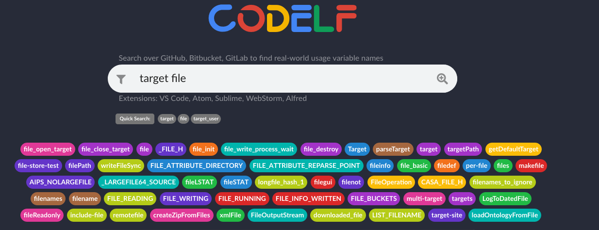

一 说明
这篇博文中,记录通过各种渠道收获的神奇网站,主要用于提升平时运维工作中的效率. 大部分是转载而来.
二 变量命名的网站
写代码时,经常需要给各种变量命名,有时候给变量命名确实头疼,一个好的变量命名要能够清晰的表达程序员的意图. 并且方便过段时间回顾代码时,快速回忆起当时的思路.
https://unbug.github.io/codelf/
这个神奇的网站,可以根据你输入的关键字,推荐一堆的变量名.快去试试吧.

三 优品PPT
一个完全免费的PPT素材下载网站，在这个网站连注册登录都不需要，找到自己喜欢的模版或素材就可以直接一键下载，没有任何套路，这个网站我相信大多数人都是需要的！
http://www.ypppt.com/
四 一个下载Chrome浏览器离线插件的站点
一个下载Chrome浏览器离线插件的站点，对于很多小伙们来说还是非常需要的，在这里已经为我们罗列了很多的分类，我们可以查找自己需要的扩展插件安装来强化浏览器！
https://chrome.zzzmh.cn/
五 一个临时文件传输平台
最好用的临时文件传输平台，别跟我提某度盘，不开会员速度就10KB/s，根本不能忍，有时候给朋友发一个游戏发一个视频那么你就可以使用这个，下载不限速，支持文件下载后自动销毁！
https://cowtransfer.com
- 这个网站感觉适合小白用户
- 另外得配套一个方便加密解密的方案,不然文件上传上去之后也不安全